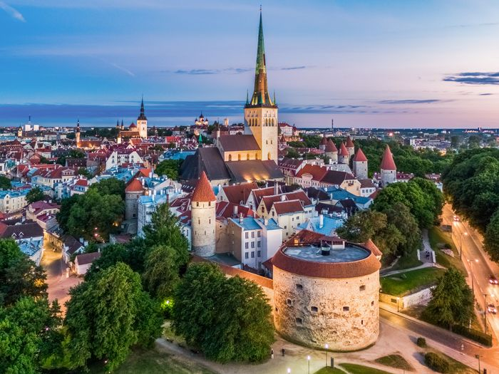
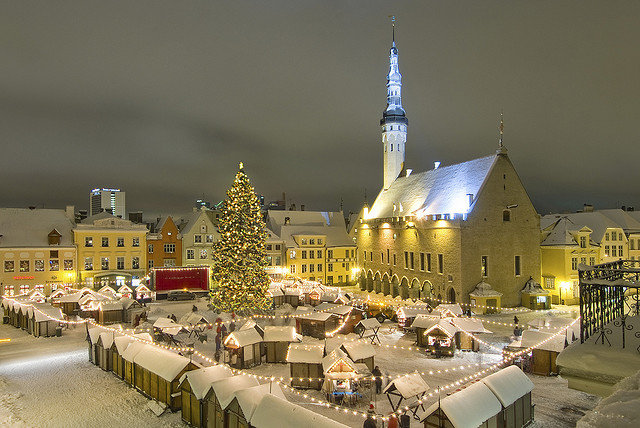
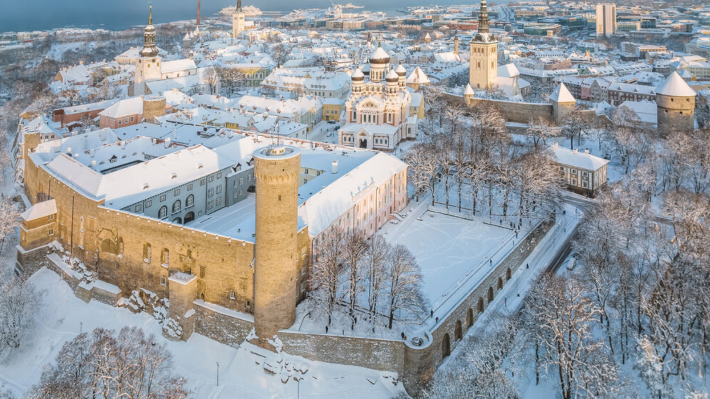
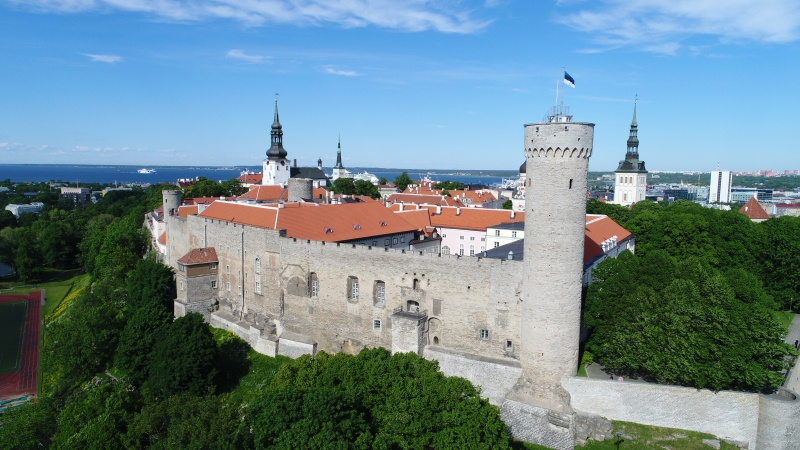
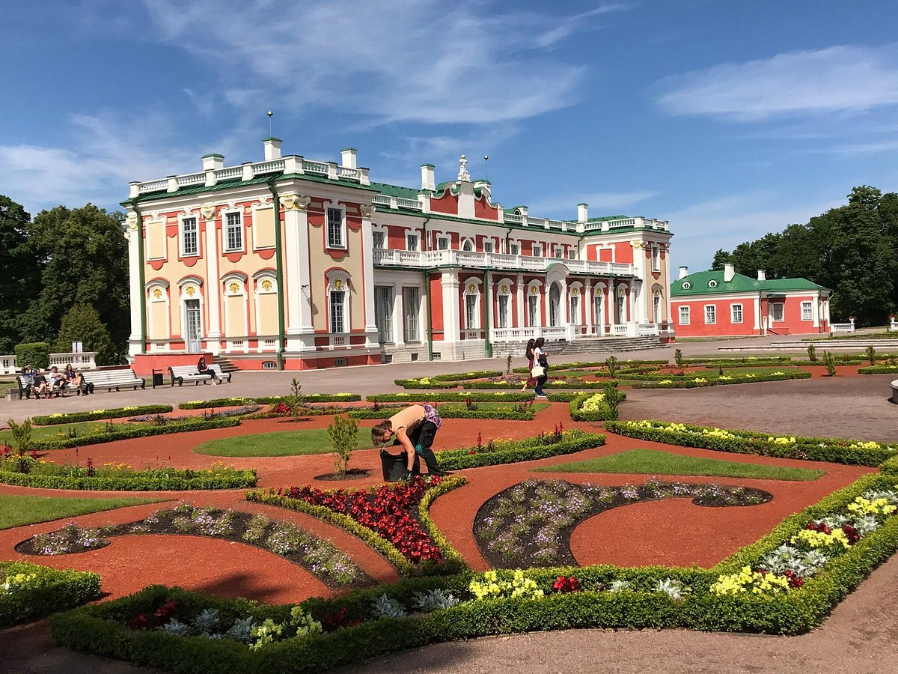
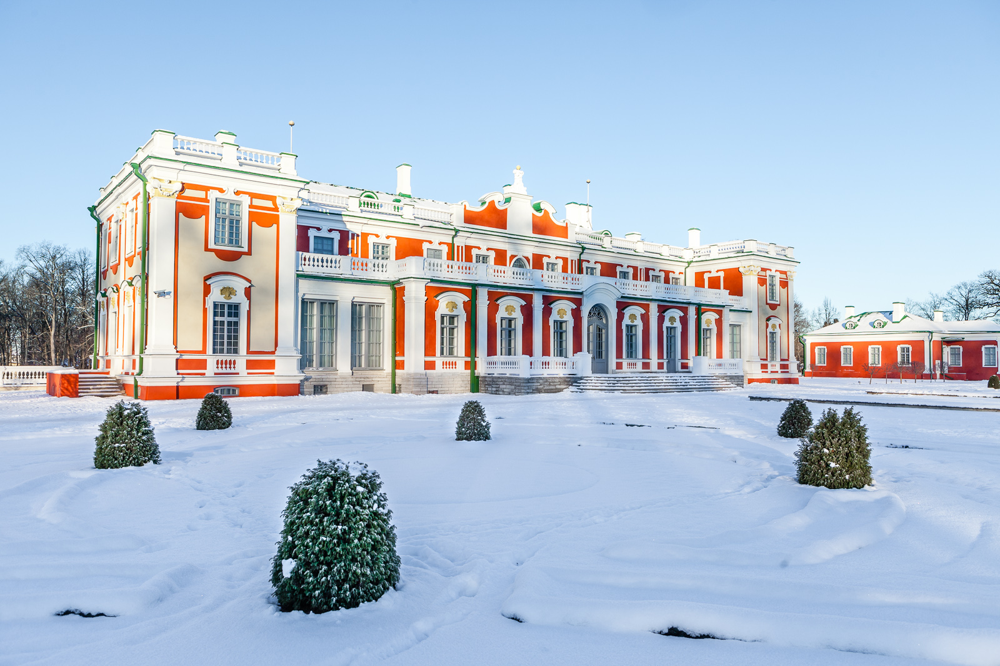
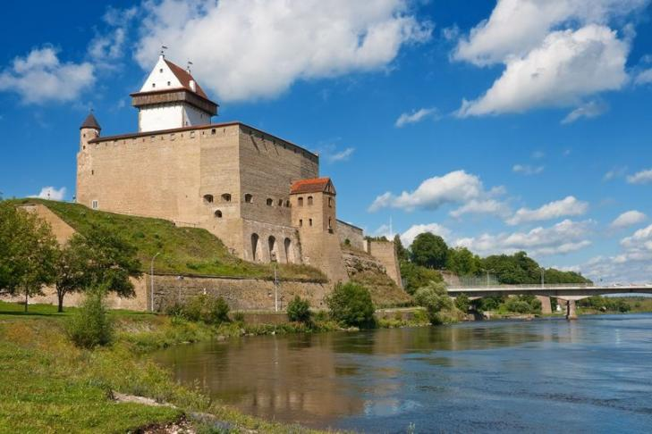
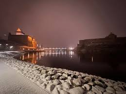
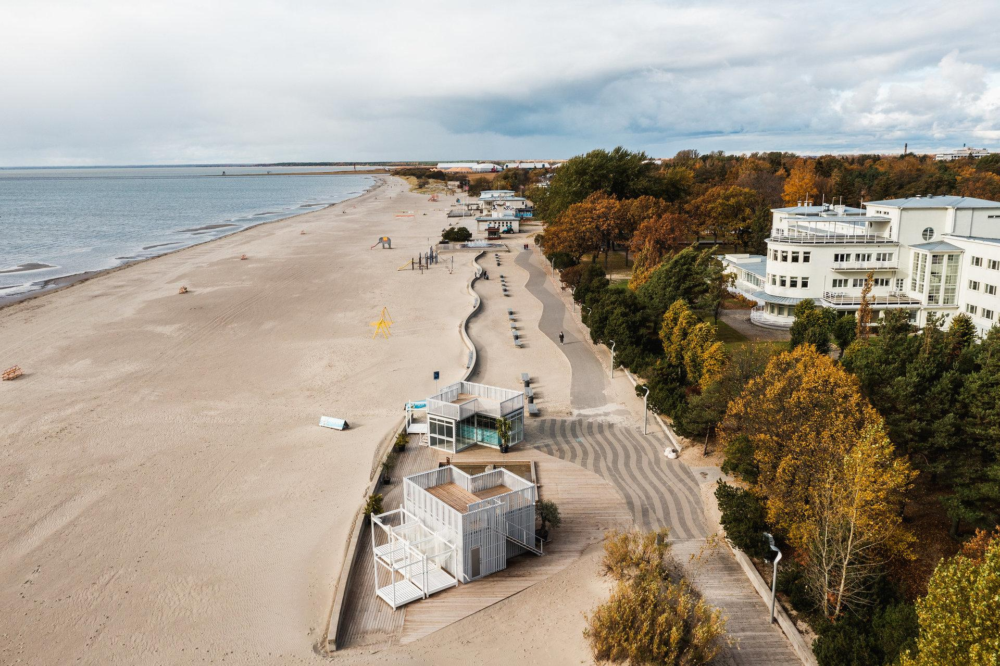
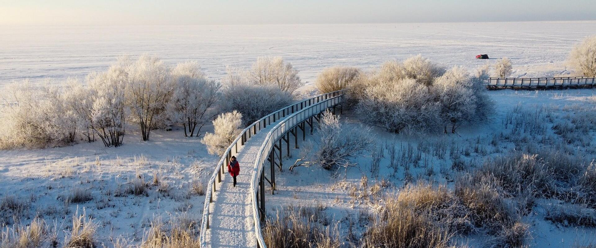

Tallinn Old Town


Tallinn Old Town is a living fairytale, where cobblestone streets wind past pastel-colored merchant houses, medieval towers, and
charming town squares. Every corner whispers stories of knights, guilds, and centuries of history preserved in perfect harmony. With
cozy cafés, artisan shops, and panoramic views from Toompea Hill, the Old Town invites visitors to step back in time and experience
the magic, culture, and enduring spirit of Estonia’s capital.
Best time to visit:
Morning or late afternoon to enjoy quieter streets. Spring and early summer are ideal — cobblestones, colorful facades, and flowers are at their
best.
Opening hours:
Open all day, every day. Shops, cafés, and museums usually operate 10:00–18:00.
Entry:
Free to wander the streets. Museum entries vary, typically €5–€15.
SEE MAP
Toompea Castle


Toompea Castle stands proudly on a limestone hill, watching over Tallinn with centuries of history etched into its walls. Once a
stronghold of kings and conquerors, today it blends medieval stone towers with elegant baroque touches, reflecting the many eras that
shaped Estonia. From its terraces, sweeping views stretch across the red rooftops of the Old Town to the Baltic Sea beyond.
Best time to visit:
Late morning or afternoon. Spring and summer are ideal, especially when the gardens and viewpoints are green and lively.
Opening hours:
The exterior and Toompea Hill are accessible daily. Interior visits are limited, as the castle houses the Estonian Parliament (Riigikogu).
Guided tours are usually available on weekdays — advance booking recommended.
Entry:
Free for exterior areas and viewpoints Interior visits: free, but only with prior registration
SEE MAP
Alexander Nevsky Cathedrala
Alexander Nevsky Cathedral rises above Tallinn like a solemn guardian of history, its dark onion domes and golden crosses glowing
against the sky. Built in the late 19th century, this grand Orthodox cathedral is rich with symbolism, sound, and spirit — from its
intricate mosaics to the deep, echoing chime of its bells, the largest in the city. Standing at the heart of Toompea, it offers
visitors a powerful blend of faith, architecture, and atmosphere. More than a landmark, Alexander Nevsky Cathedral is an unforgettable
encounter with Tallinn’s soul and layered past.
Best time to visit:
Morning or late afternoon for fewer crowds and softer light. Spring and early autumn are ideal for exploring the area comfortably.
Opening hours:
Daily, approx. 7:00–19:00. (Services are held regularly, so expect limited access during prayers.)
Entry:
Free entry. Small fee applies for photography inside.
SEE MAP
Kadriorg Palace


Kadriorg Palace feels like a soft, elegant pause in the heart of Tallinn — a place where art, history, and nature move in harmony.
Built for Peter the Great, this baroque palace is surrounded by lush gardens, quiet ponds, and tree-lined paths that invite slow walks
and reflection. Its pastel façade and refined interiors whisper stories of royal life and artistic legacy, while the surrounding park
offers one of the city’s most peaceful escapes. Kadriorg Palace isn’t just a monument — it’s a moment of calm beauty, perfect for
travelers who love culture wrapped in serenity.
Best time to visit:
Late spring to early autumn (May–September), when the park is in full bloom. Early morning or late afternoon is perfect for peaceful walks
and soft light.
Opening hours:
Kadriorg Palace (Art Museum): Usually open Tuesday–Sunday, approx. 10:00–18:00.
Kadriorg Park: Open daily, free access, from early morning until late evening.
Entry:
Palace museum ticket required (around €8–10). Park and surrounding gardens are free.
SEE MAP
Narva Castle


Narva Castle rises proudly on the banks of the Narva River, where history quite literally meets a border. Facing Russia’s Ivangorod
Fortress across the water, this medieval stronghold feels like a scene frozen in time. Its stone towers, quiet courtyards, and
panoramic views tell stories of centuries shaped by empires, trade, and conflict. Walking through Narva Castle is like stepping into
a living history book — dramatic, powerful, and deeply atmospheric. A must-see for travelers drawn to places where past and present
stand face to face.
Best time to visit:
Late spring to early autumn (May–September) for mild weather and clear views of the Narva River. Late afternoon is perfect for photos with soft
light.
Opening hours:
Daily; typically 10:00–18:00 in summer, shorter hours in winter. Hours may vary for exhibitions and events.
Entry:
Ticket required (€10–15 depending on exhibitions). Discounts available for students and children.
SEE MAP
Pärnu Beach & Promenade


Pärnu Beach & Promenade is where Estonia slows down and summer comes to life. Soft white sand stretches along calm Baltic waters,
while the elegant promenade invites long walks, bike rides, and golden sunsets by the sea. Lined with cafés, spas, and wooden villas,
it blends classic seaside charm with a relaxed, modern vibe. Whether you’re soaking up the sun, enjoying the spa culture, or strolling
under pastel skies, Pärnu offers a gentle coastal escape that feels both timeless and effortlessly cool.
Best time to visit:
Late spring to summer (May–August) when the weather is warm and the city has a lively seaside atmosphere. Evenings are perfect for sunset walks.
Opening hours:
Open daily, 24/7. The promenade, beach, and nearby cafés are accessible at all times.
Entry:
Free. Public beach and promenade with no entrance fee.
SEE MAP